The workforce platform, module by module
Nine modules of a rostering, time and attendance product for a restaurant network. Each screen answers a pain point from the research, and the ones that carry a release number were shipped.
- Delivered
- The findings report, a four-lane service blueprint across seven lifecycle stages, four personas, two worked user journeys and a scored top ten, accepted as the standing prioritisation. Eight of the ten had a named release within a year: three in release 1.63 in November 2024 and five in release 1.64 across 2025.
- Evidence behind it
- 175 pain points, each typed and triaged by the kind of change that would resolve it. 200 field survey responses, ten restaurant visits across six franchise and four equity sites, and an above-restaurant round with a franchisee, two area coaches and payroll.
- How it is built
- Hand-written HTML and CSS on the same token-based design system as the safety reporting product, extended with a rostering layer. Gated by a contrast script, a component manifest and a site lint. Components were checked against shipped products before they were drawn; the reference list is in the repository.
- Confidentiality
- The vendor, the sites and the people are removed. Every name, restaurant and number on these screens is written for the walkthrough. The findings, the quotations and the release numbers are from the delivered report.
A platform that was not short of features
Every restaurant in the network ran on the same time and attendance platform. Most managers preferred it to what came before. And yet the research found 175 distinct pain points, the compliance warnings list had grown so long that managers had stopped reading it, and the workarounds were physical: paper deployment charts transcribed twice a day, whiteboards above the time clock, spreadsheet rosters, and shifts entered in the wrong week so a pay run would go through.
Only 41 per cent of those pain points were a software problem. That is the finding the screens here are built on. The platform did not need more features. It needed a compliance layer people could work inside, a way for a manager to see the cost of a decision while they were making it, and something to give back to the team member, who supplied two thirds of the survey responses and got the least from the product.
So each module below starts from a pain point in the report and shows the screen that answers it. Where an item carried a release number, it is on the module. Where it did not, it is marked as scheduled.
The roster, with compliance running as you build
Managers described the compliance warnings list as overwhelming and unmanageable, and said the result was that issues went unactioned. One area coach checked compliance by opening the exception report, opening the roster beside it, counting published shifts and dividing by hand.
The warnings did not go away. They were triaged, and moved to where the decision is made. A roster of sixty shifts now surfaces four things that need a person, each with the cost of getting it wrong and the two or three ways to fix it.
The two counters beside the publish button are the whole argument in miniature. A count that is a route into the work is a tool. A count that is a badge is noise, which is what the old list had become.
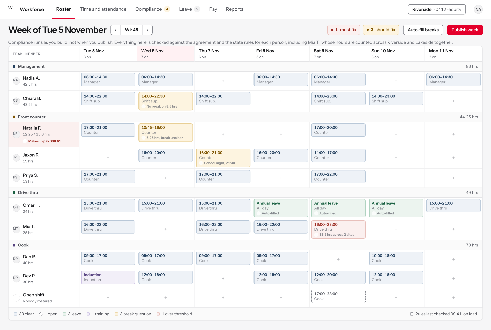
Figure 1The week as a manager builds it. Everything is checked against the agreement while the roster is being drawn, not after it is published and not on a separate screen.
Colour means something is wrong, not that something exists
FindingManagers described the compliance list as overwhelming and unmanageable, and said they had stopped actioning it. One checked it by opening the exception report, opening the roster beside it, and dividing issues by published shifts by hand.
DecisionA rostered shift is grey. Colour is spent only on the four shifts that need a decision, so the eye lands on them before it lands on anything else.
RejectedColouring every shift by work area, which is the common pattern in this category and the reason a roster of sixty shifts reads as sixty alerts.
The rule runs while the roster is being built
FindingCompliance was checked after publishing, or on a separate screen, or not at all. The exception report arrived later and from above.
DecisionTwo counters sit beside the publish button and both are routes into the work rather than badges. The footer says when the rules were last refreshed, because they used not to refresh when the screen loaded.
RejectedA compliance tab. Anything on its own tab is a thing a busy manager visits on Thursday.
The break question, priced and named
FindingThe agreement is ambiguous between five and five and a half hours, and managers could not tell whether to send a break. It was raised as a backlog item for a soft constraint on 5 to 5.49 hour shifts.
DecisionThe shift carries the hours and the doubt in the chip itself, in words, at the point the decision is made. It warns rather than stops, because a hard stop on a rule people cannot satisfy is what drives hours being recorded that were not worked.
RejectedA silent pass. The previous behaviour was that nothing flagged at all, so the entitlement was simply missed.
Part-time hours are a running total, not a surprise
FindingManagers described thinking the week had gone well, then finding warnings for people who had not met their contracted minimum hours, after the pay run had already priced it.
DecisionThe person's row carries hours against contract and the make-up pay it will cost if the week ends like this. The cost is shown before it is incurred.
RejectedReporting it at the pay run, which is where it used to appear and where it is already too late to act.
The states that matter
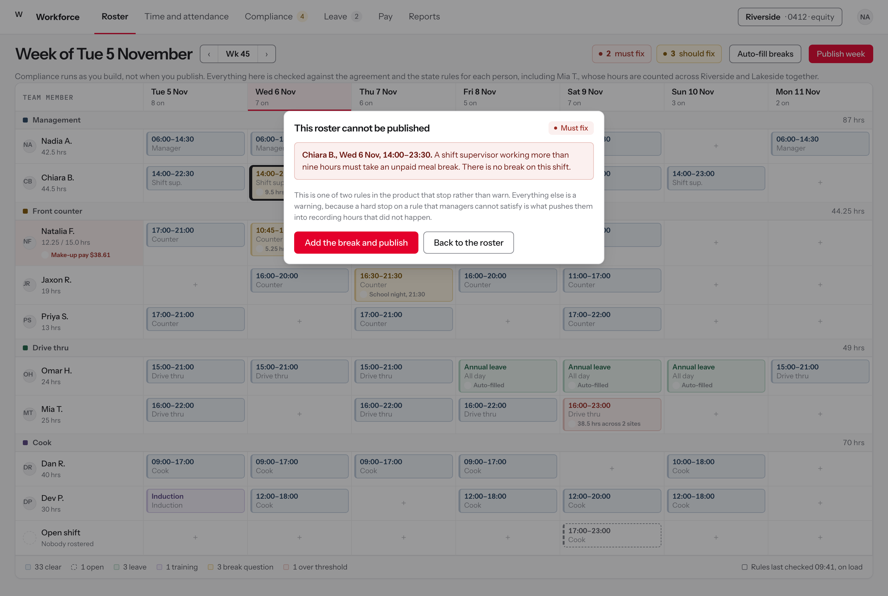
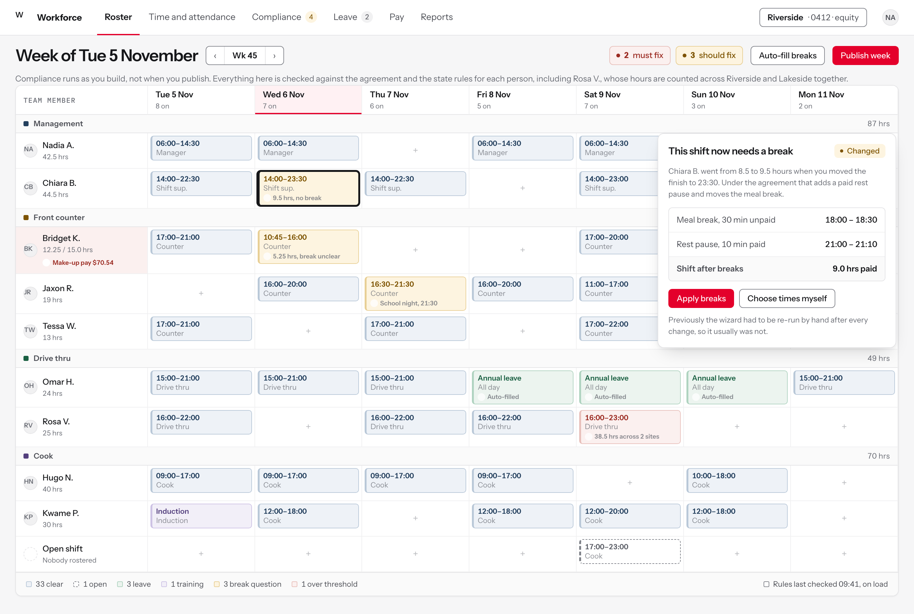
Compliance, triaged instead of listed
Compliance warnings were dismissed without investigation, with no documentation and no oversight of the dismissal. Separately, a manager was found adding missed pay as empty shifts in the following week, which created overtime and broke part-timers' contracted hours.
A flat list of thirty-one warnings is a list nobody reads. The same thirty-one split by what happens if you ignore them is a morning's work with an order to it.
Dismissing is still allowed, because the research was clear that a system which forbids it gets routed around. What changed is that a dismissal now takes a reason, carries a name, and appears on the area coach's report as a decision rather than as a silence.
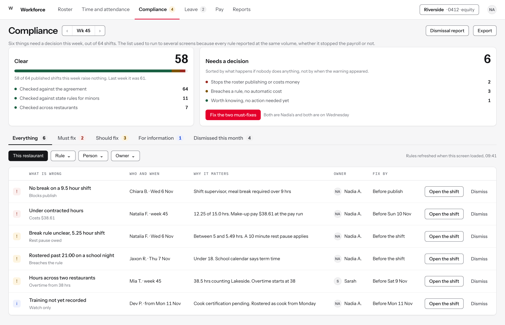
Figure 2The same warnings the old list held, sorted by what they cost and who owns them.
Sort by what happens if nobody acts
FindingThe list was long, flat and uniform, so managers dismissed warnings without investigating them. There was no documentation of a dismissal and no oversight of the decision.
DecisionTwo panels before any row: what is clear, and what needs a decision broken down by consequence. Stops the roster or costs money. Breaches a rule with no automatic cost. Worth knowing.
RejectedSeverity by rule category, which is how the original list was grouped and which tells a manager nothing about what to do first.
A warning belongs to a person
FindingWarnings belonged to the screen. Nobody owned one, so nobody was accountable for clearing it, and area coaches compiled their own spot checks by hand.
DecisionEvery row carries an owner and a date to fix it by. Five of the six are the rostering manager's and two of them are on the same day, which is a morning's work rather than a backlog.
RejectedA send-a-message action as the only response, which chases the person rather than changing the roster.
Every warning carries its price
FindingThe consequences of ignoring a warning were invisible until the pay run, when make-up pay, overtime and compliance pay appeared without explanation.
DecisionThe subtitle on each row is what it costs or what it breaches. A manager triaging six items can see which two are money.
RejectedA severity word alone, which is a judgement the product is asking the manager to trust rather than a figure they can weigh.
Dismissal is a record with a reason
FindingDismissals happened under time pressure with nothing recorded, which was raised as a backlog item for compliance pay dismissal mitigation.
DecisionDismissing asks which of three situations applies and writes a note that stays on the shift and reaches the area coach's weekly report. Three dismissals of one rule in a month raise it automatically.
RejectedA confirm dialog, which records that somebody clicked and nothing about why.
The states that matter
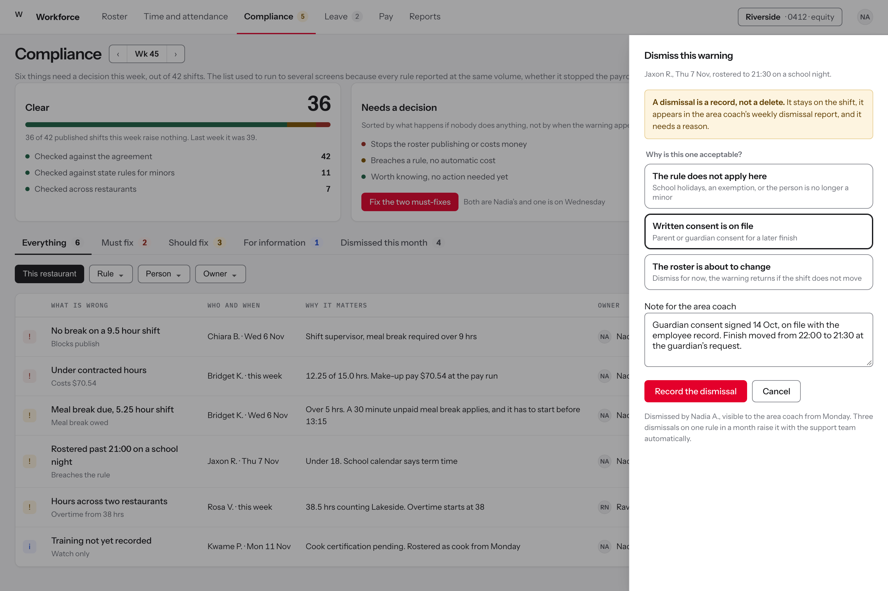
The deployment chart, generated rather than transcribed
Deployment charts were being transcribed by hand from the roster once or twice a day, onto a laminated station chart and a spiral-bound duty log. A manager asked for exactly this: make the platform auto generate a deployment chart that they can fill out manually and change.
This is the module that was asked for in plain words, so it is built in plain words. The chart generates itself from the published roster, keeps the station columns the restaurants already use, and stays editable, because the research also found that managers deploy people to stations in real time and did not want that taken away.
The whiteboard above the time clock stays. It was doing a job the platform could not do, which was showing who was due a break and when, and the screen is designed to be the thing the whiteboard is copied from rather than a replacement for it.
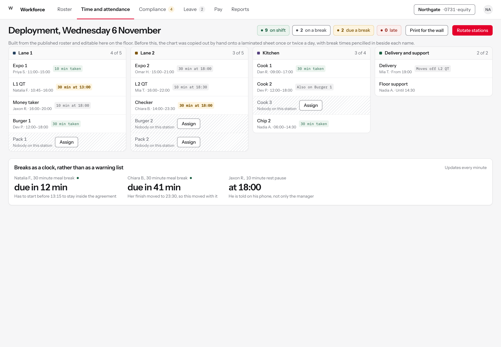
Figure 3The day's deployment, generated from the roster and editable on the floor, with the break columns the restaurants were already drawing by hand.
The question the manager actually has
FindingThe journey records an rostering manager looking at the time clock during the dinner rush and seeing only a list of red compliance warnings, at the moment she needs to know who is where.
DecisionThe board answers who is standing where and who is owed a break. Compliance is still counted, in four pills at the top, but it is not the screen.
RejectedThe warnings list as the default view, which is what it replaced and what people had learned to look past.
The laminated chart, generated
FindingRestaurants kept their own deployment charts on paper. One was a spiral-bound duty log, one a laminated sheet with columns for name, shift, ten minutes, thirty minutes and station, transcribed from the roster once or twice a day.
DecisionThe board is built from the published roster and uses the station names from those charts. It prints, because the wall is still where people look.
RejectedRostering strictly by role, which managers said they did not want because it costs them the flexibility to move people during service.
Breaks as a countdown, not a breach
FindingThere was no real-time break tracking and no automated alert for a missed or delayed break, so compliance was a note a manager kept in their head during service.
DecisionThe two people due a break are named with the time remaining and the rule that applies. The person is told on their phone as well, so it is not one manager's memory.
RejectedFlagging the breach afterwards, which is the behaviour that produced the warnings list in the first place.
An empty station is a question
FindingManagers moved people between stations during service based on what was happening, and the roster's own view of deployment did not survive contact with a rush.
DecisionUnfilled stations are hatched and carry an assign action, so the board can be edited on the floor rather than only in the office.
RejectedLocking the board to the roster, which would make it accurate and useless by seven o'clock.
Leave as a date range, not as a row of shifts
A leave shift had to be created by hand after approval, one shift at a time. A week off meant entering every shift. A year of parental leave meant entering a year of shifts. Separately, leave balances updated only at the pay run, so managers approved leave people had not accrued.
Four of the top ten were leave items, and they were four symptoms of one decision: leave had been modelled as a series of shifts rather than as a period of time. Modelling it as a range collapses all four.
Consent is the item that matters most and looks like the least. Entering leave on someone's behalf without asking them was routine, and it is the kind of thing that stays invisible until it is a dispute.
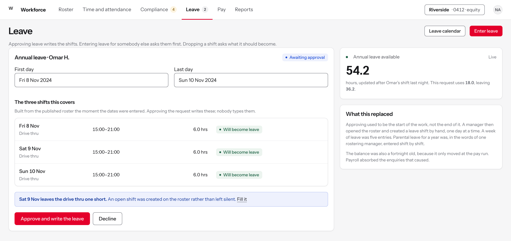
Figure 4A week, a month or a year of leave entered once. The schedule fills itself, the balance is live, and the person is asked before anything is recorded against their name.
A date range writes the shifts
FindingA leave shift had to be created by hand after approval, one day at a time. A week was five entries. Extended leave, up to a year, was described as being put in shift by shift.
DecisionThe dates produce the list of shifts they cover, read from the published roster, and approving writes all of them. Coverage lost becomes an open shift rather than silence.
RejectedBulk entry as a separate tool, which is a second thing to learn for the case that matters most.
Consent is captured, not assumed
FindingConsent was not captured when leave was entered on somebody's behalf, and a consent workflow went onto the backlog as a ranked ticket.
DecisionEntering leave for someone sends them what they are agreeing to, in hours and dollars against their balance, and writes nothing until they answer.
RejectedA tickbox on the manager's side saying consent was obtained, which records the manager's memory rather than the person's agreement.
The drop asks a question instead of leaving a hole
FindingThere was no automatic leave when a part-time person dropped a shift, and the manager then received a compliance warning for not meeting their contracted hours. One asked directly for an option to mark a dropped shift as leave with or without pay.
DecisionDropping the shift raises the four things it could become, with the cost of each, at the moment the decision is live.
RejectedDeleting the shift and reporting the shortfall later, which is what produced the warning and the make-up pay.
Every option carries its price
FindingMake-up pay and overtime arrived at the pay run with no explanation attached and no record of a decision having been made.
DecisionThree of the four options cost nothing extra and one costs a specific amount. The figure comes from the rule that would have raised the warning.
RejectedRanking the options by policy. A manager short-staffed on a Thursday is weighing coverage against cost, and needs both numbers.
The states that matter
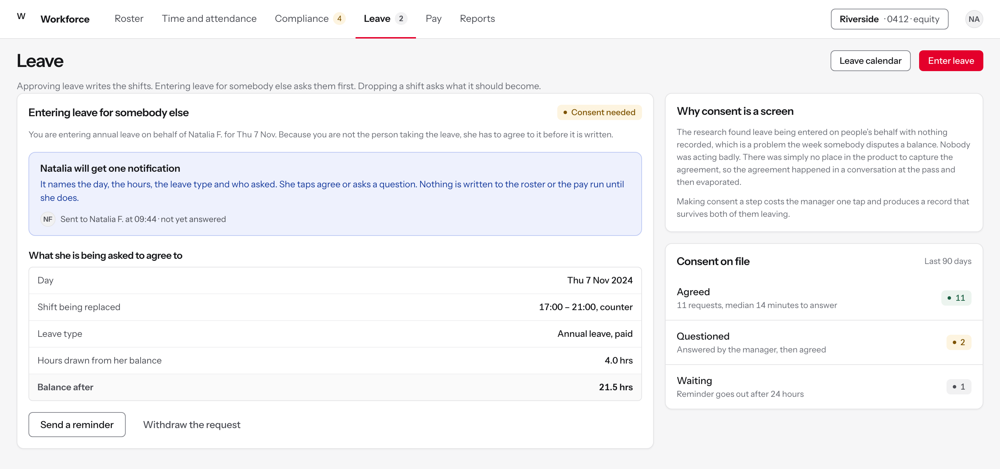
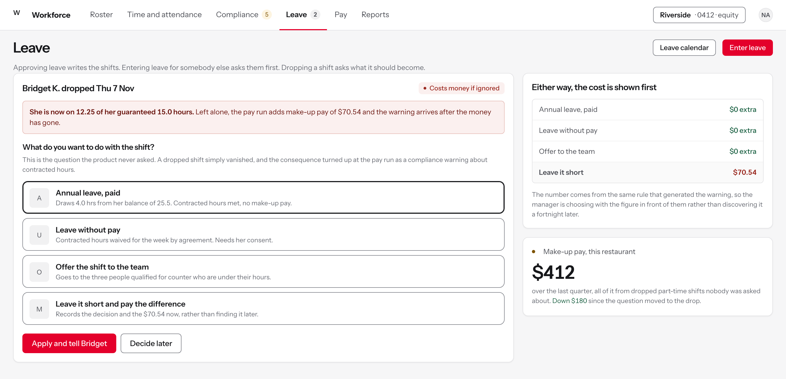
Labour, while there is still time to act on it
Hours were not counted as worked until a shift completed, so there was no running labour figure during the shift. Managers and area coaches kept their own spreadsheet trackers, filled in nightly, to get a number the platform could have given them.
A labour figure that arrives after the shift is a report. A labour figure that arrives during the shift is a decision. The research found managers doing the arithmetic by hand precisely because they needed it while they could still send someone home or call someone in.
The forecast is drawn behind the actual rather than beside it, so the gap is the thing you see first. That is the shape the spreadsheets people had built for themselves were trying to make.
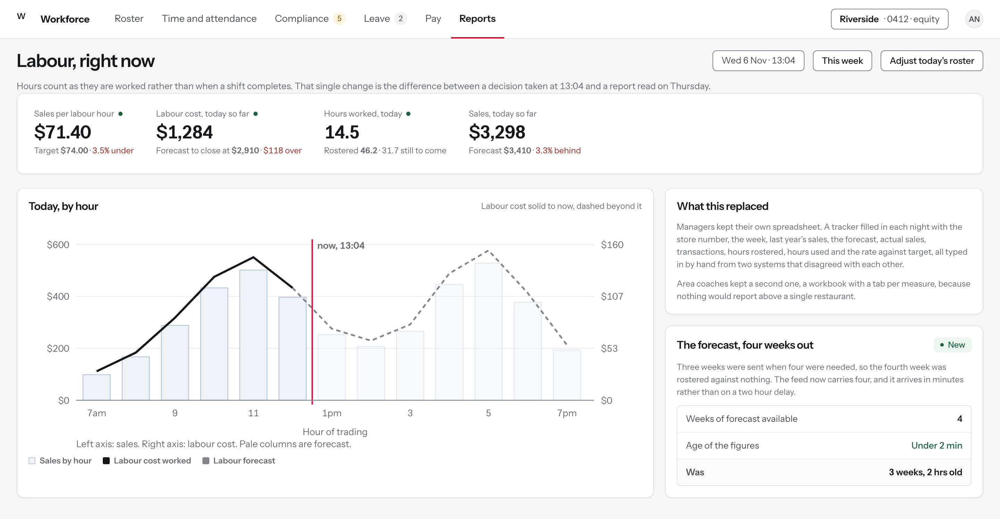
Figure 5Today, by hour, with labour counted as it is worked. The photographed spreadsheet this replaces was being filled in by hand every night.
Hours that count as they are worked
FindingHours were not counted until a shift completed, so there was no running labour figure during service. One manager put it plainly: technically it is how most systems work, but they can also do a running calculation.
DecisionLabour cost accrues minute by minute against sales, so the figure exists at the moment a decision about it can still be made.
RejectedA daily summary. A number that arrives after the shift describes the problem instead of preventing it.
Two units, two axes, said out loud
FindingManagers were comparing sales and labour by hand across two systems that disagreed with each other.
DecisionSales on the left axis, labour cost on the right, solid up to the current hour and dashed beyond it, with a line on the chart saying which axis is which.
RejectedOne axis for both, which was the first version of this screen and which made labour look like the whole of sales.
The spreadsheet this replaces, named
FindingManagers kept a nightly tracker with the store number, the week, last year's sales, the forecast, actual sales, transactions, hours rostered, hours used and the rate against target, typed in by hand. Area coaches kept a second workbook with a tab per measure.
DecisionThe four figures those spreadsheets existed to produce sit across the top of the screen, each against its target or its forecast.
RejectedA configurable dashboard. The people doing this did not want to build a report, they wanted the four numbers they were already copying.
Four weeks of forecast, minutes old
FindingHead office sent three weeks of forecast when managers needed four, and the feed reached the platform on a two hour delay, so a roster was often built against a forecast that had already moved.
DecisionFour weeks, arriving in minutes. The panel shows the age of the figures, because a forecast without its age is a guess presented as a fact.
RejectedShortening the delay alone, which leaves the fourth week rostered against nothing.
Reporting above one restaurant
Reports were per restaurant, capped at a thirty day window, and area and group figures were compiled by hand. Managers also did not know which reports existed. One said plainly that they had not generated a report in the platform for some time.
Ranked fourth of ten and released during 2025. An area coach carries more pain points than any other role in the service and had no screen built for them, which is why this scored as high as it did.
The compliance rate is the area coach's manual spot-check, automated: issues divided by published shifts. It was described in an interview as a thing done by hand, week by week, and it is now a column.
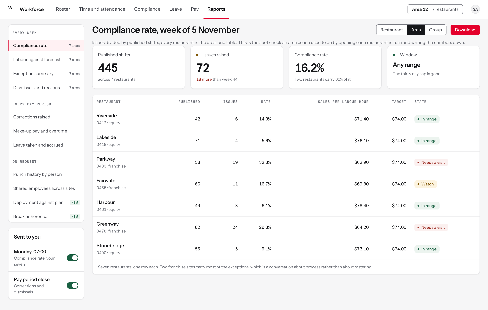
Figure 6One row per restaurant, past the thirty day cap, with the compliance rate that an area coach was calculating by hand.
One table, not seven visits
FindingReports could only be pulled per restaurant and had to be aggregated by hand for an area. One area coach described going into every restaurant and taking the numbers from the top of each.
DecisionCompliance rate as issues divided by published shifts, one row per restaurant, with the same three-level switch on every report.
RejectedA group dashboard as a separate product, which is how the manual workbook came to exist in the first place.
The reports are named, so they can be found
FindingManagers did not know which reports existed or which were useful, and were building spreadsheets for figures the platform already held.
DecisionA catalogue down the side in plain names, grouped by when you would want them, with the two new ones marked.
RejectedA report builder. The finding was not that people wanted to construct reports, it was that they did not know what was already there.
The thirty day cap is gone
FindingReports could only be generated for a thirty day window, which one participant wanted to be much longer or unlimited.
DecisionAny range, and the two standing reports arrive by themselves on Monday morning and at pay period close.
RejectedA longer fixed cap, which moves the wall rather than removing it.
The shape before the rows
FindingArea coaches were reading seven sets of numbers to find the two that mattered.
DecisionFour figures across the top, and a state on every row that says whether this is a rostering problem or a conversation about process.
RejectedRanking restaurants against each other, which turns a diagnostic into a league table and changes what gets reported.
A correction that does not need the period reopened
Reopening a pay period was long and difficult, and some groups refused to do it at all. So managers added missed pay as empty shifts in the next cycle, which created overtime, broke part-timers' contracted hours, and surprised the team member when their pay changed. One restaurant manager said the reopening was a long process, but preferred it to a workaround coming back to bite them later.
The report records this as a full user journey: a part-timer on a fifteen hour contract forgot to clock on for a five hour shift, payroll would not reopen the period, the manager added it to the following week, and the area coach then queried the overtime on the weekly compliance report. Five people, one missed punch.
The design question was not how to make reopening easier. It was why a correction needs a reopening at all. A correction is now a first-class object inside a closed period, priced at the rate of the day it was worked, and the screen shows what the workaround would have cost beside it.
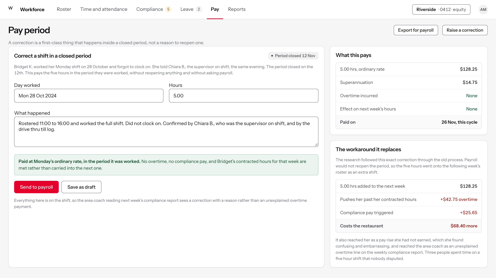
Figure 7The same hour, paid two ways. The comparison is on the screen because the research found people choosing the workaround without knowing it was the expensive option.
The compliant path is now the fast one
FindingA part-time team member forgot to clock on for a five hour shift. The period had closed, payroll would not reopen it, and the manager was told to add the hours to the following week.
DecisionA correction is a first-class thing that happens inside a closed period. No ticket, no reopening, no asking payroll.
RejectedReopening the period, which was a long process with a queue, so restaurants stopped requesting it and some refused outright.
Both paths, costed side by side
FindingAdding the hours to the next week triggered an overtime warning and compliance pay, cost the restaurant more than the shift was worth, and reached the team member as an unexplained pay rise.
DecisionThe panel on the right prices the workaround line by line against the correction, so the argument for doing it properly is a number rather than a policy.
RejectedA warning that the workaround is non-compliant. People already knew. What they did not have was a faster alternative.
The reason travels with the money
FindingThe area coach saw the overtime on the weekly compliance report a week later and had to ring the manager to find out what it was.
DecisionWhat happened, who confirmed it and the day it was worked are all on the correction, so the report shows a correction with a reason rather than an anomaly.
RejectedA shift note, which the correction does not carry with it into payroll or into the report.
Paid in the period it was worked
FindingDelayed payment affected people's budgeting, and the report recorded that pay timing matters because other payments depend on it.
DecisionThe hours are paid at the day's own rate, in the cycle they belong to, with no effect on the following week's hours.
RejectedCarrying it forward, which changes the rate, the hours and the person's contracted total all at once.
The states that matter
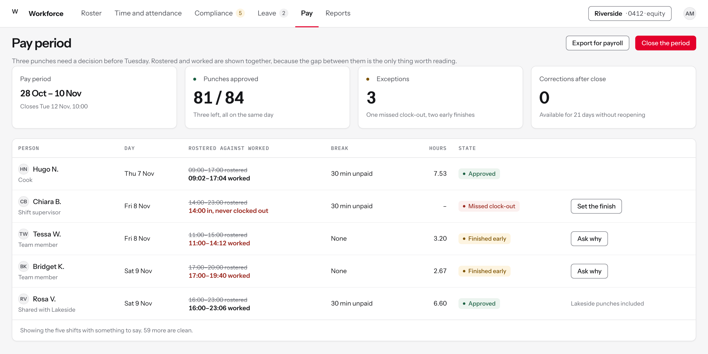
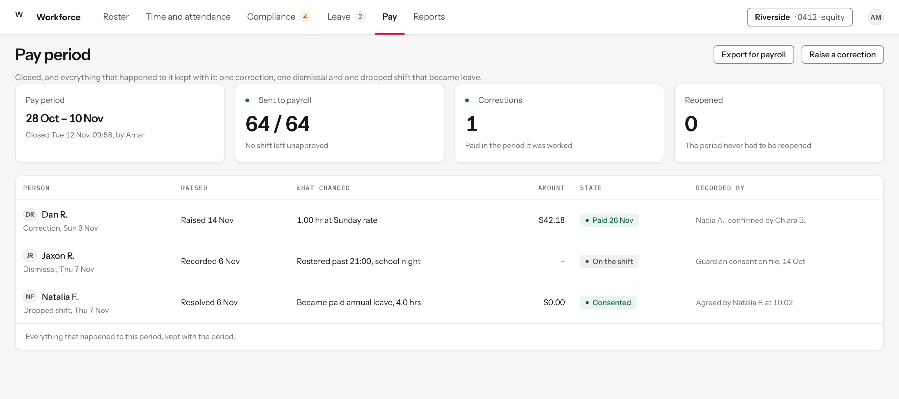
The app for the person the platform gave the least to
Team members had no punch times and no clock in or out history in the app, no view of elapsed break time and no notification when a break should end, and a leave balance that updated only at the pay run. Two thirds of the 200 survey responses came from team members.
One team member said they wanted to see how much time they had left on a break, because people were coming back early. Another said they wished they could see their expected pay and their leave balance after every shift. Neither is a hard feature. Both were missing.
The break countdown is the one that matters operationally, because the manager was tracking it on a whiteboard and in their head. Putting it on the phone of the person taking the break moves it to the only place it can be acted on.
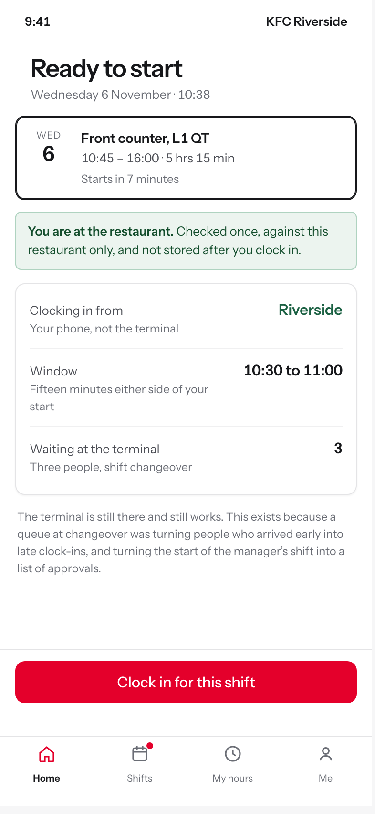
Figure 8Arriving. Seven minutes before the shift starts, inside the restaurant, with three people already queuing at the terminal. The journey the research wrote down opens exactly here.
Clocking in without the queue
FindingThe journey opens with three people waiting at the time clock at changeover. A fifteen year old arrives fifteen minutes early and still clocks in late, and his manager starts her shift approving late clock-ins that nobody caused. The report names the gap as no queuing system or second clock-in point, and no allowance for arrival time.
DecisionClocking in from a phone, inside the restaurant only, inside a fifteen minute window either side of the rostered start. The terminal stays for anyone without a phone or without the policy to use one.
RejectedA second terminal, which measures the queue rather than removing it and costs hardware in several hundred restaurants.
The break you are on, as a clock
FindingTeam members said they wanted to see how much time was left on a break, and were coming back saying they had another five minutes. There were no notifications for when a break should end.
DecisionA ring and a countdown, with a nudge at five minutes that goes to the person and the manager at the same time.
RejectedA start and end time in a list, which is what the shift detail showed and which nobody can do arithmetic on mid-shift.
Your own punch times
FindingPunch times were not visible in the app and there was no clock in or out history, so verifying a time meant asking a manager. One interview recorded that being an issue from the beginning.
DecisionEvery punch for the period, with the break inside it, and an amended punch shown as an amendment with who added it and why.
RejectedShowing only the corrected figure, which quietly replaces what the clock recorded and gives a person nothing to query.
A leave balance that is true today
FindingBalances only moved at the pay run. Managers approved leave people had not accrued, and payroll absorbed the enquiries.
DecisionThe balance updates after each shift is clocked out of, and expected pay updates with it, which were the two figures people asked for most.
RejectedA balance as at the last pay run, which is accurate on one day a fortnight.
The states that matter
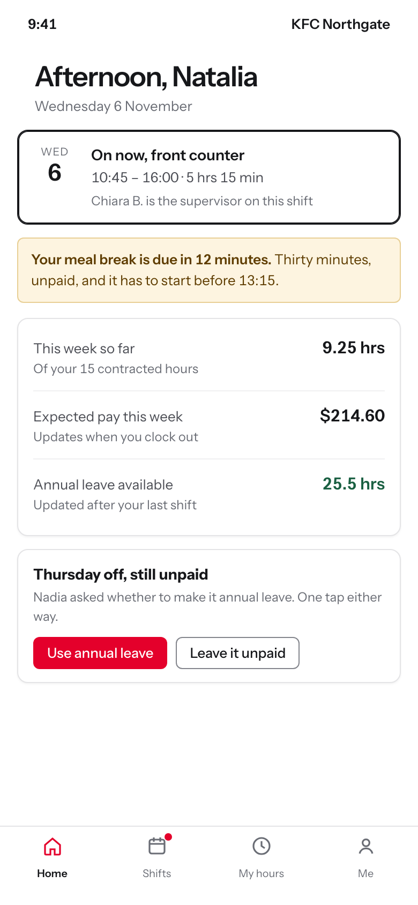
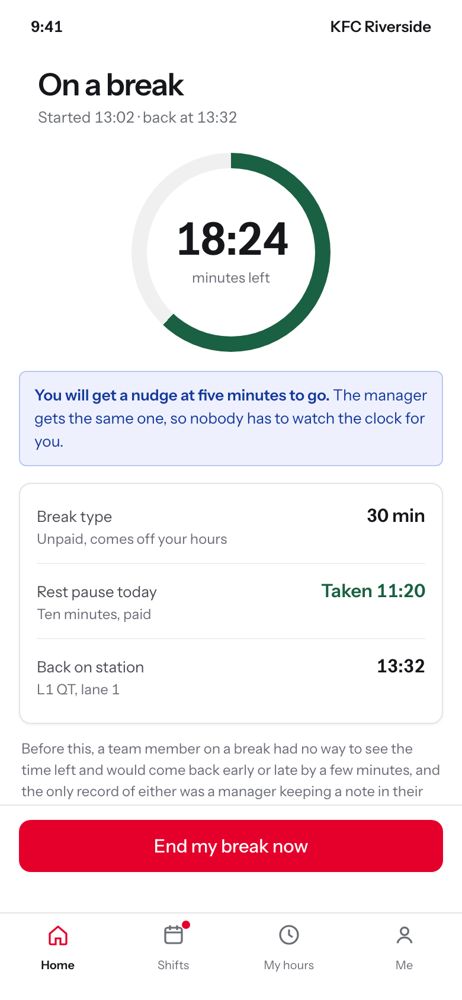
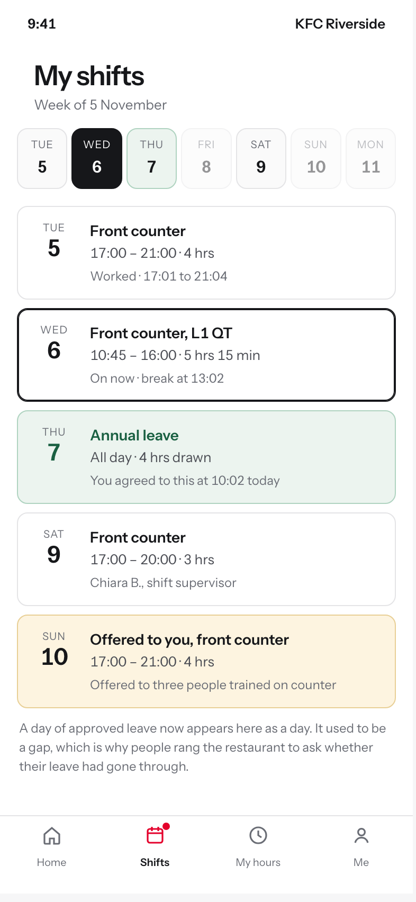
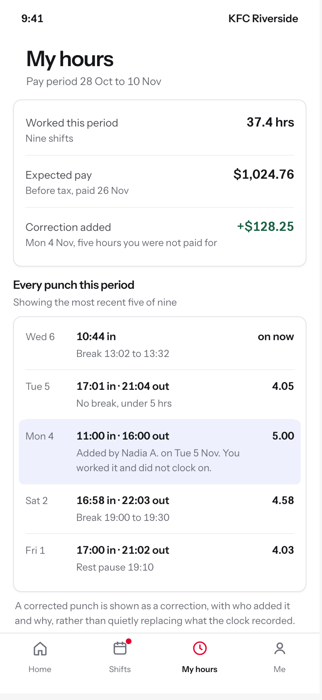
What is switched on, and where
There was no standard baseline of enabled features across the business. Shift swaps and messaging were configured differently by location, managers did not know what was available to them, and an area coach could not enable a feature for a single restaurant inside a larger franchise group.
This is the module that came out of the 26 per cent of pain points tagged as education. The report asked for the configurable options to be published clearly so managers know what is available to them, and a screen is the honest way to publish them.
Franchise autonomy is real and is not being designed away. What the console changes is that the variation becomes visible and deliberate, instead of being discovered by a manager who assumed a feature did not exist.
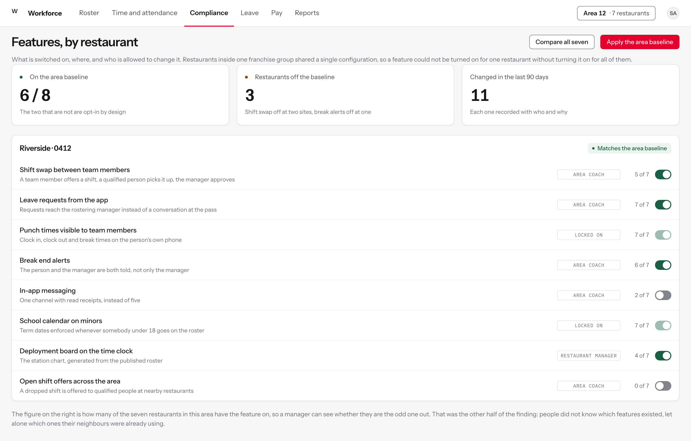
Figure 9Every configurable feature against every restaurant in the group, with who can change it and what happens when it is off.
What is on, and where
FindingThere was no standard baseline. Critical features were configured differently across locations, managers lacked clarity on what was available, and useful functionality went unused.
DecisionOne list of features in plain language, with what each one does, and a count of how many restaurants in the area have it on.
RejectedA settings tree, which is how the configuration was reached before and why nobody knew what was in it.
One restaurant inside a group
FindingFeatures could not be enabled for a single restaurant inside a larger franchise group, so an area coach could not pilot anything.
DecisionScope is per restaurant, and each row says who is allowed to change it. Two rules that carry legal weight are locked on and say so.
RejectedGroup-wide switches only, which forces an all-or-nothing decision on every franchisee at once.
Being the odd one out is visible
FindingCommunication ran across five channels because the in-app one had unreliable notifications, and nobody could see what their neighbours were doing.
DecisionThe count on the right shows how many of the seven have each feature on, which turns a configuration screen into a quiet comparison.
RejectedNaming the restaurants that differ, which makes it an audit rather than a prompt.
Two products, one set of tokens
This product and the safety reporting product are built on the same token file and the same component library. That is deliberate: they are two products for the same network, used by the same restaurant manager on the same shift, so a badge, a table row and a primary button behave identically in both.
What the workforce product added is a rostering layer: a shift chip with six states, a roster grid that freezes the person column and the day header, a strip that draws forecast demand behind rostered labour, and a compliance rail. Colour is the scarce resource. A rostered shift is grey, because a week holds sixty of them, and colour is spent only on the shifts that need a decision.
Tokens are written in the W3C Design Tokens format and compiled to CSS, the component manifest is generated from the stylesheet, and the build fails if either drifts. A contrast script checks every text pair at 4.5:1 and every border at 3:1. It caught a real failure while this layer was being written: an open shift is drawn as an outline, so the outline is the object and has to clear 3:1, which the first grey did not.
Surfaces
Ink
Status
Status grounds
Roster states
Type scale
--p-fs-112pxThe manager classifies from the outcome--p-fs-213pxThe manager classifies from the outcome--p-fs-314pxThe manager classifies from the outcome--p-fs-415.5pxThe manager classifies from the outcome--p-fs-518pxThe manager classifies from the outcome--p-fs-626pxThe manager classifies from the outcome--p-fs-734pxThe manager classifies from the outcome